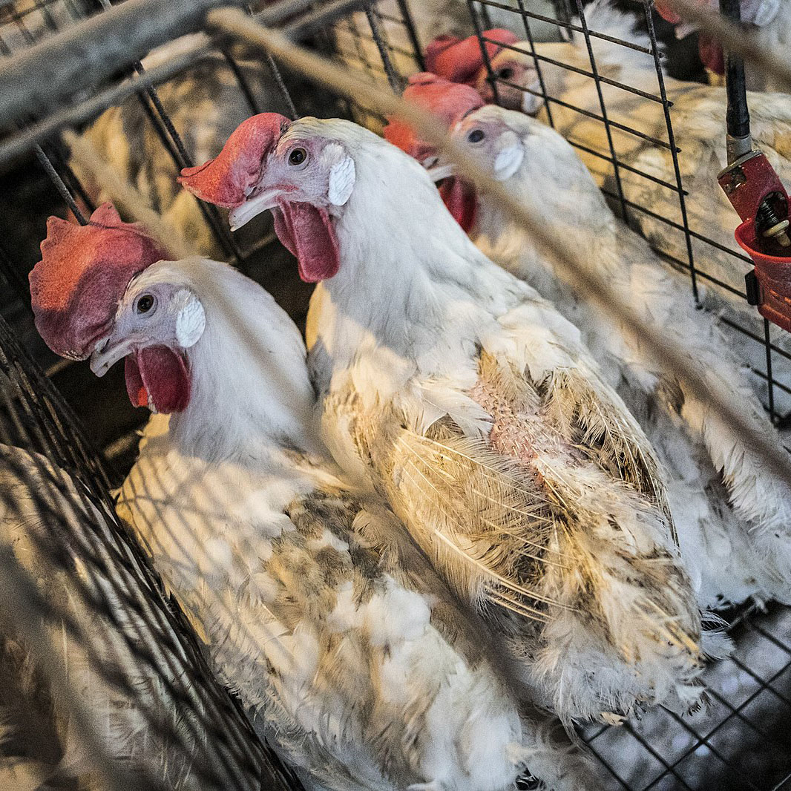

Fem voksne mennesker stablet i et bur på 1 m³.
Dette er virkeligheten til 70 burhøner.
Ingen tilgang til naturlig lys eller mulighet til å spre vingene.
Burhøns i eggproduksjon lider av alvorlige dyrevelferdsproblemer,
som er konsekvensen av en industri som kun har ett mål:
Flest mulig egg - billigst mulig.

Ved å donere til dyrevernalliansen bidrar du til å hjelpe kyllingene til bedre levevilkår.
Blant annet - mindre dyretetthet og tilgang på dagslys.